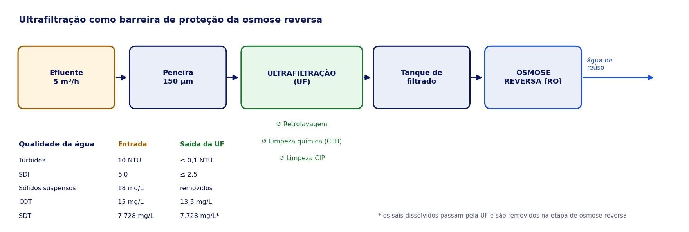
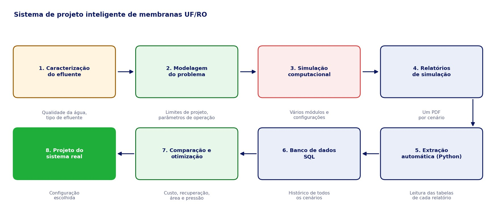
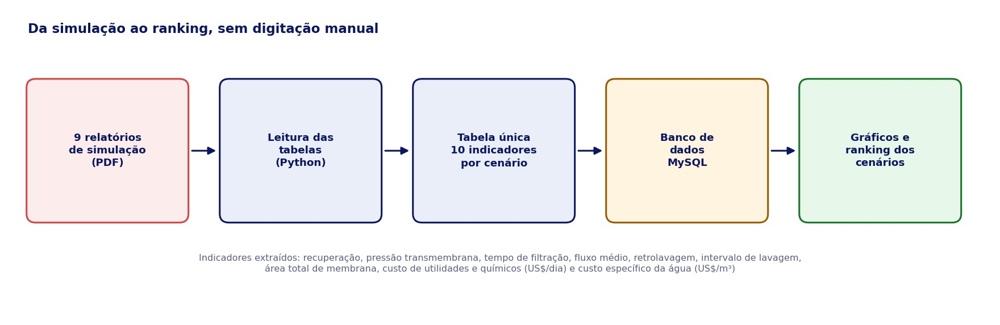
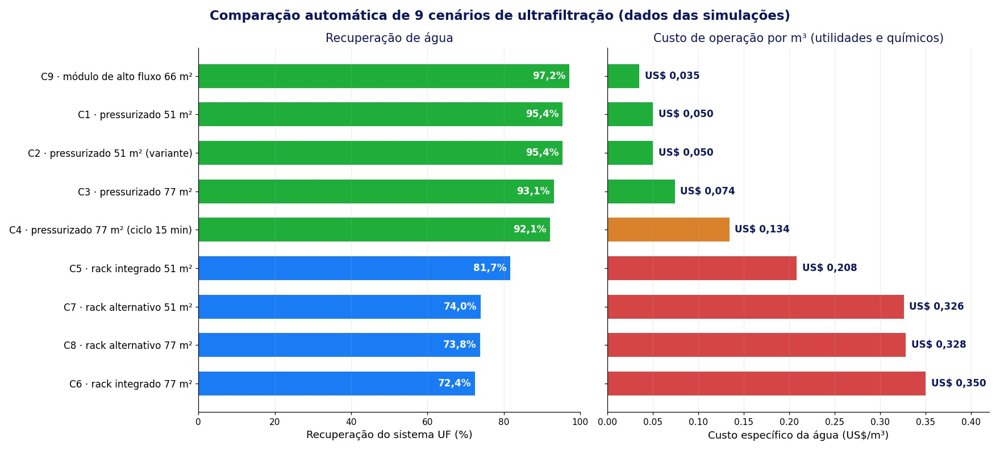
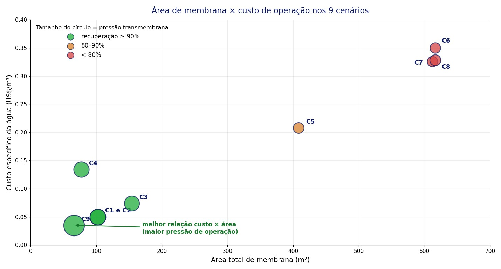
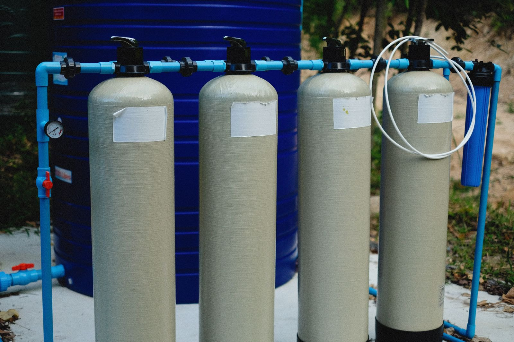
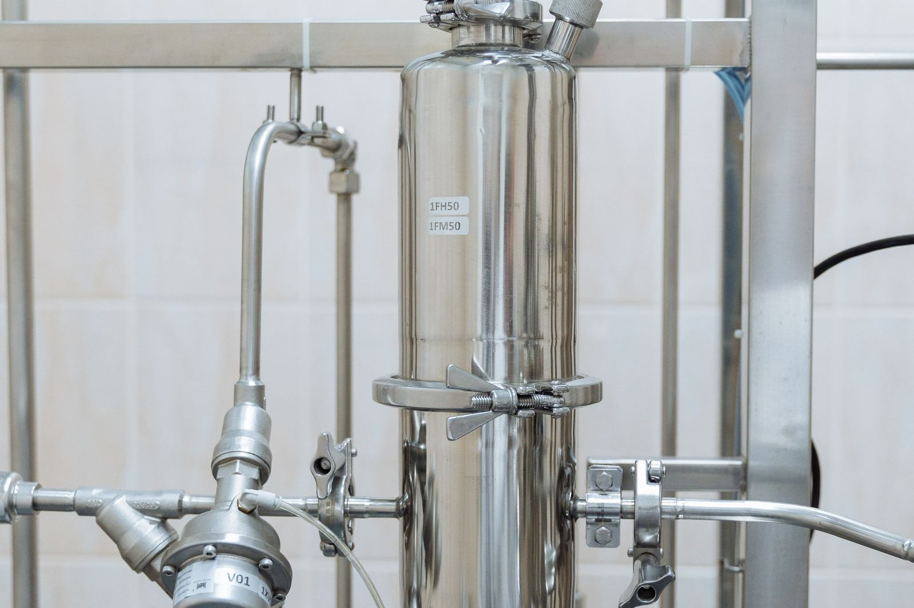

Problema / desafio do cliente
Projetar um sistema de membranas exige testar muitas combinações de módulo, fluxo, ciclos de limpeza e número de unidades. Cada simulação gera um relatório longo, e comparar os cenários à mão é lento, repetitivo e sujeito a erros de digitação. Na prática, poucas alternativas acabam sendo avaliadas.
O objetivo foi criar um sistema de projeto inteligente que automatiza a comparação dos cenários e aponta, com dados, a melhor configuração de ultrafiltração (UF) para proteger uma osmose reversa (RO) no reúso de efluente.
Contexto e características do processo
- Projeto de um sistema de ultrafiltração como pré-tratamento de osmose reversa para o reúso de um efluente industrial derivado de resíduos.
- A UF remove partículas, sólidos suspensos e parte da matéria orgânica, reduzindo a carga e a incrustação (fouling) das membranas de RO, que são mais caras e sensíveis.
- Vazão de projeto de 5 m³/h de efluente, com turbidez de 10 NTU, sólidos suspensos de 18 mg/L, COT de 15 mg/L, SDI de 5 e sais dissolvidos de cerca de 7.700 mg/L.
- Meta de qualidade na saída da UF compatível com a RO: turbidez ≤ 0,1 NTU e SDI ≤ 2,5.

Diagnóstico e dados analisados
- Foram simulados 9 cenários de UF com diferentes tipos de módulo (pressurizados, racks integrados e módulos de alto fluxo), áreas de membrana e ciclos de operação.
- Cada cenário gerava um relatório de 11 páginas, com os indicadores espalhados em várias tabelas.
- Os resultados variavam muito: a recuperação de água ia de 72% a 97%, a área de membrana de 66 a 616 m² e o custo de operação de US$ 0,035 a US$ 0,35 por m³, uma diferença de 10 vezes.
- Escolher sem uma comparação sistemática poderia levar a um sistema superdimensionado ou com custo de operação muito maior que o necessário.
Metodologia utilizada
- Caracterização do efluente e definição das metas de qualidade para a RO.
- Modelagem do problema: limites de projeto e parâmetros de operação (fluxo, retrolavagem, limpezas químicas e CIP).
- Simulação computacional de cada cenário em software de projeto de membranas.
- Extração automática dos resultados de cada relatório com Python.
- Armazenamento de todos os cenários em banco de dados SQL.
- Comparação e otimização por recuperação, pressão transmembrana, área e custo por m³.
- Definição da configuração para o projeto do sistema real.

Solução de engenharia desenvolvida
Desenvolvemos uma ferramenta em Python que transforma os relatórios de simulação em uma base de dados comparável:
- lê automaticamente as tabelas de cada relatório e extrai 10 indicadores por cenário: recuperação, pressão transmembrana, tempo de filtração, fluxo médio, retrolavagem, intervalo de lavagem, área total de membrana, custo diário de utilidades e químicos e custo específico da água;
- consolida tudo em uma tabela única e grava em um banco de dados MySQL, criando um histórico de projetos que pode ser consultado e ampliado;
- gera os gráficos de comparação e o ranking dos cenários em segundos.

Tecnologias e processos envolvidos
- Ultrafiltração como pré-tratamento de osmose reversa (retrolavagem, limpezas químicas CEB e CIP).
- Software de simulação e projeto de membranas.
- Python: PyMuPDF (leitura de PDFs), pandas, SQLAlchemy e matplotlib.
- Banco de dados relacional MySQL.
- Código disponível publicamente no GitHub.
Modelagem, simulação e ferramentas computacionais
A comparação automática dos 9 cenários mostrou dois grupos bem distintos:

Os módulos pressurizados e de alto fluxo trabalham com fluxos de 60 a 147 L/m²·h, menos área de membrana e recuperação acima de 92%. Os racks testados operam com fluxo de 12 a 20 L/m²·h, o que exige muito mais área e consome mais água de lavagem e químicos.

O código completo está no repositório Smart-Membrane-Design-UF-RO no GitHub.
Resultados obtidos
- 9 cenários comparados automaticamente, sem digitação manual dos resultados.
- O melhor cenário teve 97% de recuperação, 66 m² de membrana e custo de operação de cerca de US$ 0,035/m³, contra até US$ 0,35/m³ nas piores alternativas.
- Como esse cenário opera com pressão transmembrana mais alta (1,4 bar), os cenários pressurizados de 51 m² (95% de recuperação, 0,7 bar, US$ 0,05/m³) ficaram como alternativa mais conservadora para efluentes com alto potencial de incrustação.
- Qualidade de saída da UF compatível com a RO em todos os cenários: turbidez ≤ 0,1 NTU e SDI ≤ 2,5.
- A base SQL permite reaproveitar os resultados em novos projetos e é o ponto de partida para otimização multivariável e modelos de aprendizado de máquina que sugerem a configuração ideal a partir da qualidade do efluente.
CAPEX/OPEX e análise técnico-econômica
O custo de operação (utilidades e químicos) variou de US$ 4 a US$ 30 por dia para a mesma vazão de 5 m³/h. Em um ano, a diferença entre o melhor e o pior cenário passa de US$ 9.000 só em operação, sem contar o custo de compra da área extra de membrana (até 9 vezes maior).
Escopo e responsabilidades da GETA
A GETA foi responsável por todo o desenvolvimento:
- definição das bases de projeto a partir da caracterização do efluente;
- simulação dos cenários de ultrafiltração;
- desenvolvimento da ferramenta de extração e do banco de dados;
- análise comparativa e recomendação da configuração.
Principais entregáveis
- Ferramenta em Python para extração automática dos relatórios de simulação.
- Banco de dados SQL com todos os cenários simulados.
- Gráficos comparativos e ranking das configurações.
- Recomendação da configuração de UF como pré-tratamento da osmose reversa.
- Código e notebooks (repositório público no GitHub).
Galeria

